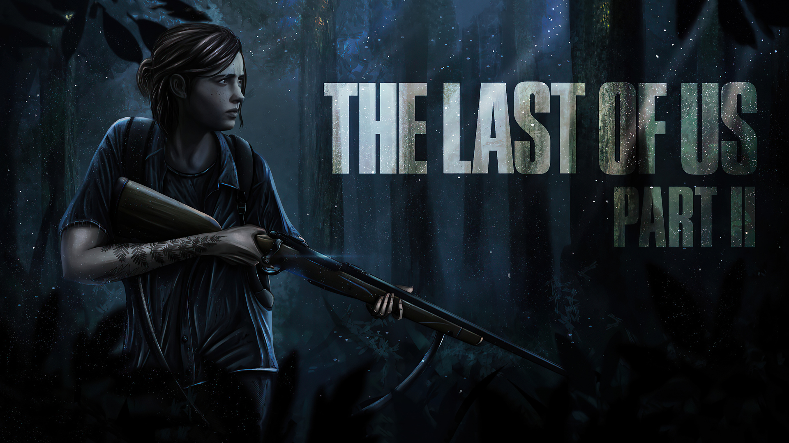

Best games to platinum in 2024
1. God of War (2018)

In "God of War (2018)," players embark on a deeply emotional journey alongside Kratos and his son Atreus, exploring the realms of Norse mythology and confronting their own troubled pasts. The game's narrative is woven seamlessly into its gameplay, with every encounter and revelation propelling players forward on their quest for redemption.Achieving the platinum trophy in "God of War" requires more than just completing the main story; it demands a deep dive into the game's rich lore and expansive world. From deciphering ancient runes to unlocking the true power of Kratos' Leviathan Axe, every discovery brings players closer to mastering their role as the God of War.Moreover, the game's combat system is both challenging and rewarding, with each enemy encounter offering an opportunity to hone skills and experiment with different strategies. From epic boss battles against towering creatures to intimate confrontations with gods and monsters, every fight in "God of War" is a testament to the game's mastery of both storytelling and gameplay.
2. Bloodborne
From the twisted minds of FromSoftware comes "Bloodborne," a gothic masterpiece that challenges players to embrace the fear and uncertainty of the unknown. Set in the haunting city of Yharnam, this action RPG immerses players in a nightmarish world plagued by eldritch horrors and grotesque creatures.Achieving the platinum trophy in "Bloodborne" demands mastery of its fast-paced combat mechanics, precise timing, and strategic thinking. From exploring labyrinthine environments filled with secrets and shortcuts to facing off against terrifying bosses like Father Gascoigne and Lady Maria, every moment in Yharnam is fraught with tension and exhilaration.Moreover, uncovering the game's multiple endings and hidden storylines adds layers of depth to the already rich narrative, enticing players to embark on multiple playthroughs in search of enlightenment and closure.
3. Spider Man 2
 Swinging back into action, "Spider-Man 2" offers players the chance to become the iconic web-slinger as they traverse the bustling streets and towering skyscrapers of New York City. Building upon the success of its predecessor, this game delivers an even larger and more dynamic open-world playground for players to explore.Achieving the platinum trophy in "Spider-Man 2" involves not only completing the main story and side missions but also fully mastering Spidey's acrobatic combat and traversal abilities. From gracefully swinging between buildings to engaging in fast-paced combat encounters against a variety of supervillains, every moment in Peter Parker's shoes feels exhilarating and true to the essence of being Spider-Man.Moreover, uncovering the game's numerous collectibles and hidden secrets, including backpacks containing mementos from Peter's past and landmarks scattered throughout the city, offers a deeper appreciation for the rich history and lore of the Spider-Man universe.
Swinging back into action, "Spider-Man 2" offers players the chance to become the iconic web-slinger as they traverse the bustling streets and towering skyscrapers of New York City. Building upon the success of its predecessor, this game delivers an even larger and more dynamic open-world playground for players to explore.Achieving the platinum trophy in "Spider-Man 2" involves not only completing the main story and side missions but also fully mastering Spidey's acrobatic combat and traversal abilities. From gracefully swinging between buildings to engaging in fast-paced combat encounters against a variety of supervillains, every moment in Peter Parker's shoes feels exhilarating and true to the essence of being Spider-Man.Moreover, uncovering the game's numerous collectibles and hidden secrets, including backpacks containing mementos from Peter's past and landmarks scattered throughout the city, offers a deeper appreciation for the rich history and lore of the Spider-Man universe.
4. Red Dead Redemption 2

Set against the backdrop of the dying days of the Wild West, "Red Dead Redemption 2" is a sprawling epic that immerses players in the rugged landscapes and gritty realism of the American frontier. As Arthur Morgan, players must navigate the complex social dynamics of the Van der Linde gang while facing threats from rival outlaws, lawmen, and the encroaching forces of civilization.Achieving the platinum trophy in "Red Dead Redemption 2" requires not only completing the main story missions but also engaging in a wide range of activities, from hunting and fishing to playing poker and participating in epic shootouts. Moreover, fully exploring the vast open world reveals hidden treasures, easter eggs, and encounters with colorful characters that add depth and richness to Arthur's journey.Whether you're riding across the sweeping plains of New Hanover, bonding with your trusty steed, or engaging in intense gunfights against rival gangs, "Red Dead Redemption 2" offers a platinum journey that captures the essence of life on the frontier.
5. The Last of Us Part II

Set in a post-apocalyptic world ravaged by a deadly fungal infection, "The Last of Us Part II" is a haunting and deeply emotional journey that follows Ellie as she seeks revenge in the wake of a tragic loss. The game's narrative is a complex tale of love, loss, and the cyclical nature of violence, pushing players to confront difficult moral choices and the consequences of their actions.Achieving the platinum trophy in "The Last of Us Part II" requires players to not only complete the harrowing main story but also fully explore the game's richly detailed world and uncover its hidden secrets. From deciphering journal entries and letters to discovering hidden stashes of supplies and resources, there's always something new to uncover in the ruins of civilization.Moreover, the game's combat system is as brutal as it is visceral, with every encounter feeling tense and unpredictable. Whether you're sneaking past enemies in the shadows or engaging in intense firefights against heavily armed foes, every decision you make can mean the difference between life and death in the unforgiving world of "The Last of Us Part II."Additionally, the game's characters are fully realized and deeply nuanced, with their own motivations and desires driving the narrative forward. From Ellie's journey of self-discovery to Abby's quest for redemption, every character in "The Last of Us Part II" feels like a fully fleshed-out individual, with their own hopes, fears, and flaws.